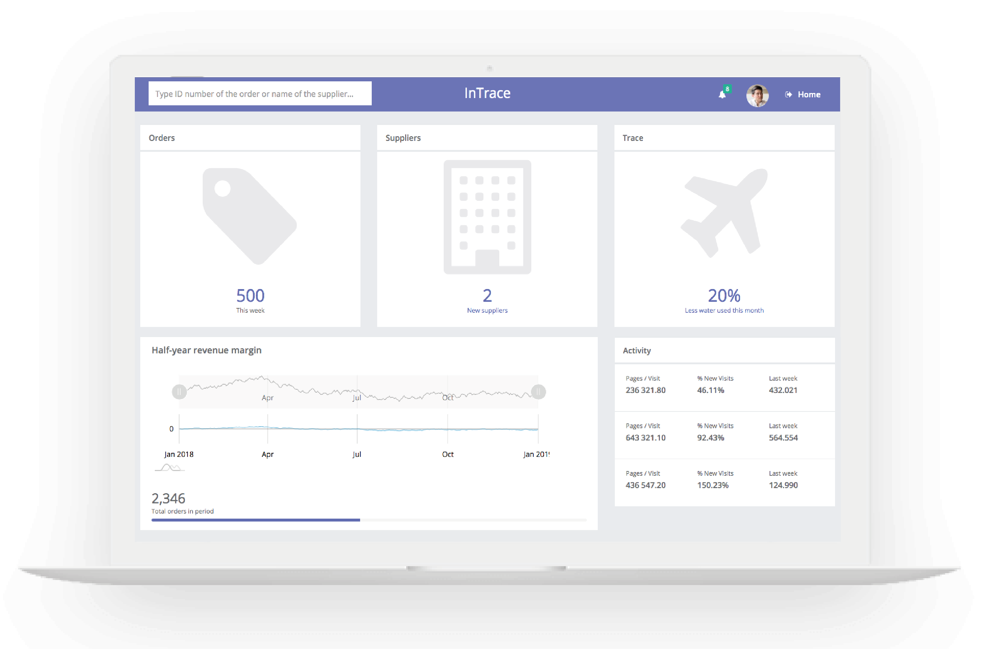
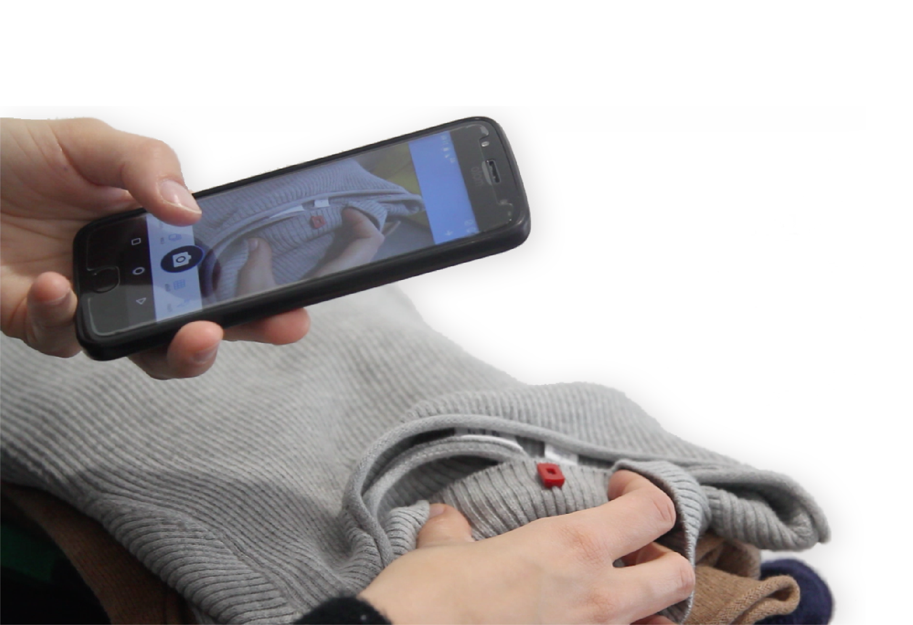
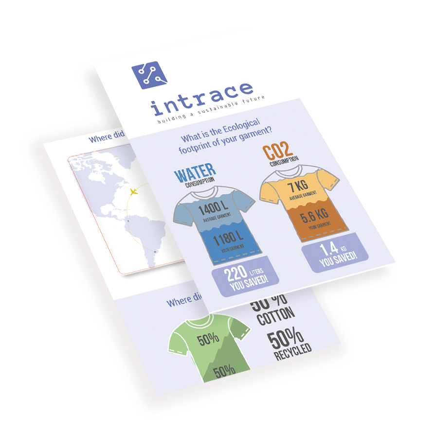

<!DOCTYPE html>
<html>
</html>
<head>
  <meta charset="utf-8">
  <meta http-equiv="X-UA-Compatible" content="IE=edge">
  <title>Creative - Bootstrap Portfolio Theme by Bootstrapious.com</title>
  <meta name="description" content="">
  <meta name="viewport" content="width=device-width, initial-scale=1">
  <meta name="robots" content="all,follow">
  <!-- Bootstrap CSS-->
  <link rel="stylesheet" href="vendor/bootstrap/css/bootstrap.min.css">
  <!-- Font Awesome CSS-->
  <link rel="stylesheet" href="vendor/font-awesome/css/font-awesome.min.css">
  <!-- Google fonts - Roboto-->
  <link rel="stylesheet" href="https://fonts.googleapis.com/css?family=Roboto:400,300,700,400italic">
  <!-- owl carousel-->
  <link rel="stylesheet" href="vendor/owl.carousel/assets/owl.carousel.css">
  <link rel="stylesheet" href="vendor/owl.carousel/assets/owl.theme.default.css">
  <!-- theme stylesheet-->
  <link rel="stylesheet" href="css/style.blue.css" id="theme-stylesheet">
  <!-- Custom stylesheet - for your changes-->
  <link rel="stylesheet" href="css/custom.css">
  
  <!-- Favicon-->
  <link rel="shortcut icon" href="img/favicon.png">
  <!-- Tweaks for older IEs--><!--[if lt IE 9]>
    <script src="https://oss.maxcdn.com/html5shiv/3.7.3/html5shiv.min.js"></script>
    <script src="https://oss.maxcdn.com/respond/1.4.2/respond.min.js"></script><![endif]-->
  </head>
  <body>
      <div id="all">
        <div class="container-fluid">
          <div class="row row-offcanvas row-offcanvas-left"> 
            <!--   *** SIDEBAR ***-->
            <div id="sidebar" class="col-md-4 col-lg-3 sidebar-offcanvas">
              <div class="sidebar-content">
                <h1 class="sidebar-heading"> <a href="index.html">Iuliia Vorobiova</a></h1>
                <p class="sidebar-p notonmobile">I am a versatile person that could be one day a designer and next day a developer and some other day a video maker. I love creating things from a very scratch to a very final stage, along the way enjoin creative process. </p>
                <p class="sidebar-p notonmobile">Originally from Ukraine, currently based in Milan. </p>
                <ul class="sidebar-menu">
                    <!-- Link-->
                    <li class="sidebar-item"><a href="index.html" class="sidebar-link active">Home</a></li>
                    <!-- Link-->
                    <li class="sidebar-item"><a href="about.html" class="sidebar-link">About</a></li>
                    <!-- Link-->
                    <li class="sidebar-item"><a href="contact.html" class="sidebar-link">Get in touch</a></li>
                </ul>
                <p class="social"><a href="https://www.linkedin.com/in/iuliiavorobiova/" target="_blank"  data-animate-hover="pulse" class="external gplus"><i class="fa fa-linkedin"></i></a>
                  <a href="https://www.facebook.com/juliya.vorobyova" target="_blank"  data-animate-hover="pulse" class="external facebook"><i class="fa fa-facebook"></i></a>
                  <a href="https://www.instagram.com/melania.m13"  target="_blank" title="" class="external instagram"><i class="fa fa-instagram"></i></a>
                  <a href="mailto: iuliia.vorobiova@gmail.com" data-animate-hover="pulse" class="email"><i class="fa fa-envelope"></i></a></p>
                <div class="copyright text-center text-md-left">
                  <p class="credit">&copy;2019 Iuliia Vorobiova </p>
                  <!-- Please do not remove the backlink to us, unless you support the development at http://bootstrapious.com/donate. It is part of the license conditions. Thanks for understanding :)        -->
                </div>
              </div>
            </div>
        <!--   *** SIDEBAR END ***  -->
        <!--   *** DETAIL ***-->
        <div class="col-md-8 col-lg-9 content-column white-background">
          <div class="small-navbar d-flex d-md-none">
            <button type="button" data-toggle="offcanvas" class="btn btn-outline-primary"> <i class="fa fa-align-left mr-2"></i>Menu</button>
            <h1 class="small-navbar-heading"> <a href="index.html">Portfolio </a></h1>
          </div>
          <div class="row">
            <div class="col-xl-11">
              <div class="content-column-content">
                <h1>Intrace</h1>
                <p class="lead">INTRACE enables all stakeholders across the supply chain to access up-to-date information about the lifecycle of a garment and its environmental impact, thereby helping them make data-driven decisions and close the loop. Creating an ecosystem of tech, management and information. To address all the needs.</p>
                <div class="notonmobile">
                <header>
                <div class="overlay notonmobile"></div>
                <video playsinline="playsinline" autoplay="autoplay" muted="muted" loop="loop">
                  <source src="./img/wall_video.mp4" type="video/mp4">
                </video>
                
              </header>
            </div>
             
               <!-- 
                <div id="main-slider" class="owl-carousel owl-theme">
                    <div class="item"></div>
                    <div class="item"></div>
                    <div class="item"></div>
                    <div class="item"></div>
                  </div>   --> 
                 

          <section id="features" class="features bg-gray " style="padding-top:20px ; padding-bottom: 60px; ">
            <div class="container">
              <div class="row d-flex align-items-center">
                <div class="text col-lg-6 order-2 order-lg-1">
                  <div class="icon"></div>
                 
                  
                  <h4>INTRACE  </h4>
                  <p> A digital platform for suppliers that acts as a centralized repository of all order-related and subcontractor-related information (production steps, supplier profiles, rankings, audits and certifications) as well as provides visualized analytics of the garments’ sustainability metrics.
      
      
                    </p><a href="https://juliavoro.github.io/" target="_blank" class="btn btn-primary btn-shadow btn-gradient  ">View More</a>
                </div>
                <div class="image col-lg-6 order-1 order-lg-2"></div>
              </div>
              <div class="row d-flex align-items-center">
                <div class="image col-lg-6"></div>
                <div class="text col-lg-6">
                  <div class="icon"></div>
                  <h4>INTRACE Tag</h4>
                  <p>A physical NFC tag embedded into the garment with a dual interface: for end-users and sorting/ recycling companies - enabling access to required data about garment characteristics thus automating the sorting process and facilitating data exchange back to the digital platform.
                      </p>
                </div>
              </div>
              <div class="row d-flex align-items-center">
                <div class="text col-lg-6 order-2 order-lg-1">
                  <div class="icon"></div>
                  <h4>INTRACE Tag: App</h4>
                  <p>Enabling end-customers to access sustainability data about their garment - to see the ecological footprint of its production. Provides recycling guidelines linked to the composition of the garment and location of the customer.
                    </p><a href="https://xd.adobe.com/spec/40535cd7-96de-4b85-6fb8-2c4995b3ce02-3662/" class="btn btn-primary btn-shadow btn-gradient" target="_blank">View More</a>
                
                
                
                  </div>
                <div class="image col-lg-6 order-1 order-lg-2"></div>
              </div>
            </div>
          </section>
      
      
      
      
      
          
  
      
      
      
      
      
      
      
         
              


                
                
                
                
                
               
                <!-- /#main-slider-->

              

                <div class="col-xl-12">
                
                  
         
               <h2>Value proposition</h2>
                <p class="lead">The solution helps to make data-driven decisions and close the production loop. Therefore, has a clear value proposition for each of the stakeholders involved:

                <br>
            
               
                <ul>
                  <li><b>- Manufacturers</b>, convenience and performance improvement: through a centralized repository of all order & supplier information with visual analytics of the garment’́s environmental impact
                  </li><br>
                  <li><b>- Retail brands</b>, circularity and connection with the customer: data on production, use and disposal of garments that facilitates evolution towards more sustainable practices
                  </li><br>
                  <li><b>- Recycling facilities</b>, automation and efficiency: easy access to a broader data set on garment characteristics for a more efficient sorting process
                  </li><br>
                  <li><b> - End customers</b>, awareness and sustainable options: knowledge about the garment’s environmental impact and sustainability tips allowing for more conscious purchases</li>
                </ul>
                <h2>Connection with 
                  the end-customer</h2>
                <p class="lead">
                  Making aware end-customer about a garment’s production history and environmental footprint.</p>
                <div class="notonmobile">
                  <header>
                  <div class="overlay notonmobile"></div>
                  <video playsinline="playsinline" autoplay="autoplay" muted="muted" loop="loop">
                    <source src="./img/video scan.mp4" type="video/mp4">
                  </video>
                  
                </header>
              </div><br>
              <h4>Project</h4>
                
                      <p>Copmany: <a href="https://triwool.pt" target="_blank">Triwool</a> <br>
                        <a href="https://sugar-network.org/" target="_blank">SUGAR Network for Design Innovation</a>  <br>
                 
                        
                        <a href="https://intraceintel.github.io/" target="_blank">Landing Page</a>  <br>
 <br>


                         
                      </p>
              </div>
            </div>
          </div>
        </div>
      </div>
    </div>
  </div>
  <!-- JavaScript files-->
  <script src="vendor/jquery/jquery.min.js"></script>
  <script src="vendor/popper.js/umd/popper.min.js"> </script>
  <script src="vendor/bootstrap/js/bootstrap.min.js"></script>
  <script src="vendor/jquery.cookie/jquery.cookie.js"> </script>
  <script src="vendor/owl.carousel/owl.carousel.min.js"></script>
  <script src="vendor/masonry-layout/masonry.pkgd.min.js"></script>
  <script src="js/front.js"></script>
</body>